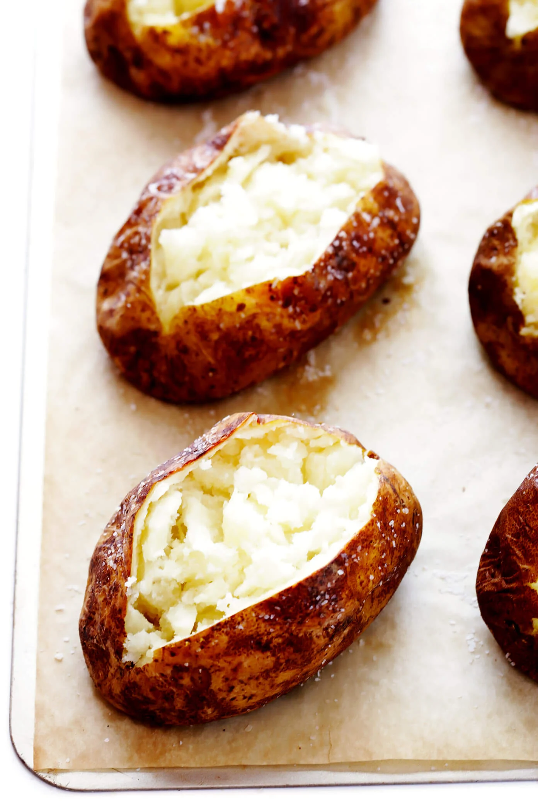

Baked Potato

A baked potato, known in some parts of the United
Kingdom as a jacket potato, is a preparation of potato.
It may be served with fillings, toppings or condiments
such as butter, cheese, sour cream, gravy, baked beans,
and even ground meat or corned beef.
Ingredients
- Russet potatos
- Butter or olive oil
- Kosher salt
- Freshly ground black pepper
Steps
- Heat oven to 450F
- Place potatos on baking sheet
- Poke several holes in each potato with a fork
- Bake for 25 minutes
- Brush potatos with melted butter or oil. Add salt.
- Bake potatos for another 20-25 minutes.
- Cut open, add seasonings/toppings, and eat!